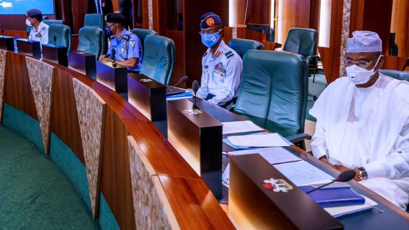
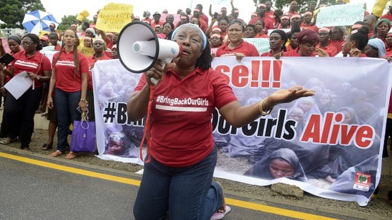
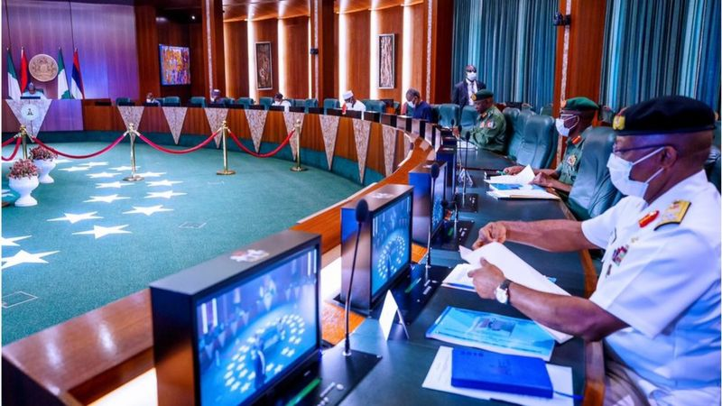

Current news in Nigeria: President Buhari security council meeting must find solution for this four national challenge.
Olubunmi Okunnu
Broadcast Journalist 28 Aug 2020

Nigerians hope President Muhammadu Buhari meeting with security personel on Thursday will end with solutions to all the different national challenges they have gone through in recent times.
Today, President Muhammadu Buhari lead the Security Council Meeting, special meeting with top people in government to torchlight security in Nigeria with vice-president Yemi Osinbajo also present.
The meeting comes up during the time. North to South, East to West of Africa most popular country, security issues everywhere.
Lets take a look at four most important issues this meeting suppose provide solution for.
Lockdown palava
Since Buhari administration declare nationwide lockdown for corona virus sake, late March 2020, plenty secret has been leaked, of how jaguda people use the oppurtunuty to commit crime.
Lagos, the commercial capital and neighbouring Ogun State for south west Nigeria, people narrate how armed robbery gang takeover areas, and begin rob from house to house.
The mater get fair to the extent, Inspector General of Police in the kontri order officers to begin patrol states to counter the crime.
But this did not end in Lagos, as this story follow other parts of the country.
Ogun Robbery
Last two weeks, reports of robbery related to cultism increase in the south-western state of Ogun.
Recently, Benue announce 16 recover vehicles and 8 armed robbers arrested by police during operation.

A global campaign was launched for the release of the chibok girls
Boko Haram
Just yesterday Nigeria government announced, soldier kill about 75 member of Boko Haram militant group that have been causing bloodshed in Nigeria(now they've spread to Niger, Chad and Cameroon).
For 2018 attack, Boko Haram kidnap girls in school and of one them was suppose to celebrate her 17th birthday in freedom 'LEAH SHARIBU' But she's still in captivity.
Southern Kaduna
Attacks on villages by suspected herdsmen and bandits enter news again as fight with farmers become one of Nigeria biggest national disgrace.
This time around southern Kaduna.
Recently there was an attack that kill plenty people including women and children in kanjuru, kaduna State,northwest Nigeria
And although the federal government arrange solution into what causes bloodshed - How herdsmen can feed there cattle and not affect farmers plant - attacks still still happening.

Other Security Palava Like:
Extra judicial killings by police and other security agents in the Country.